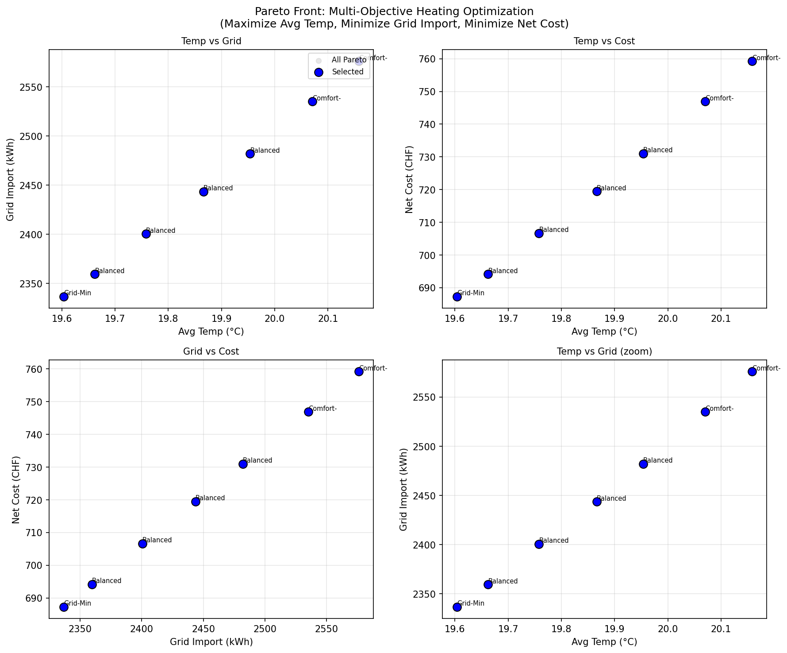
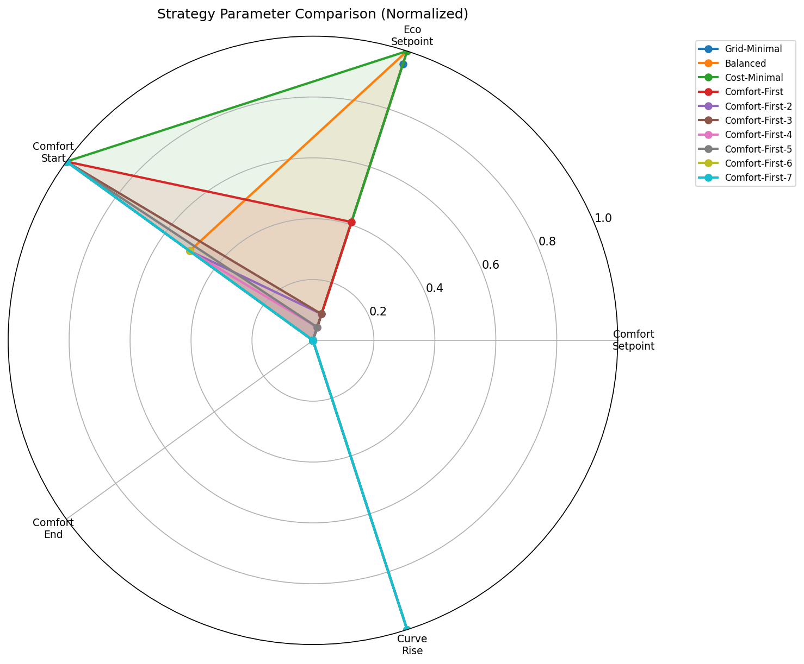
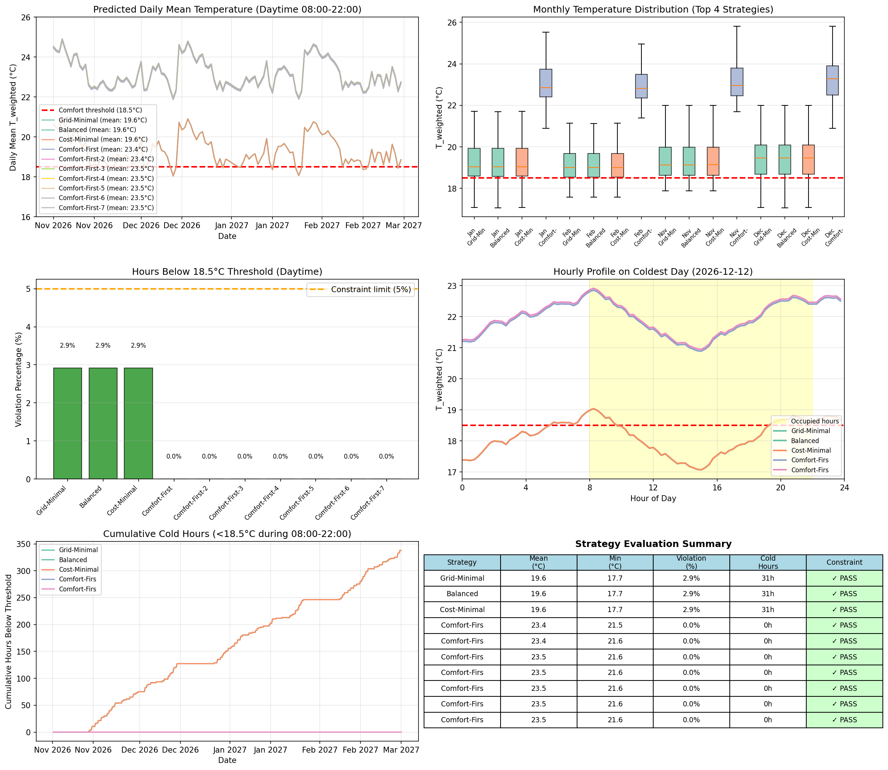
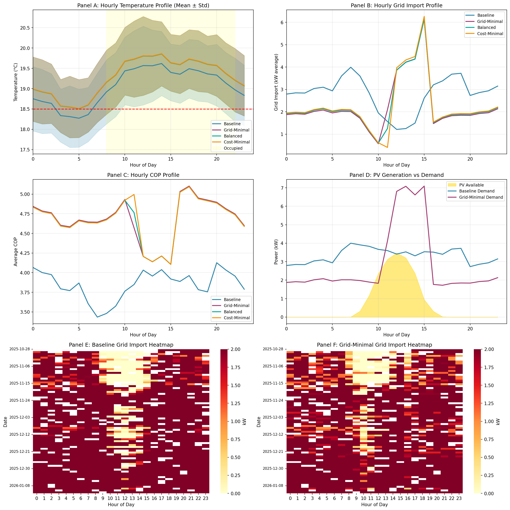
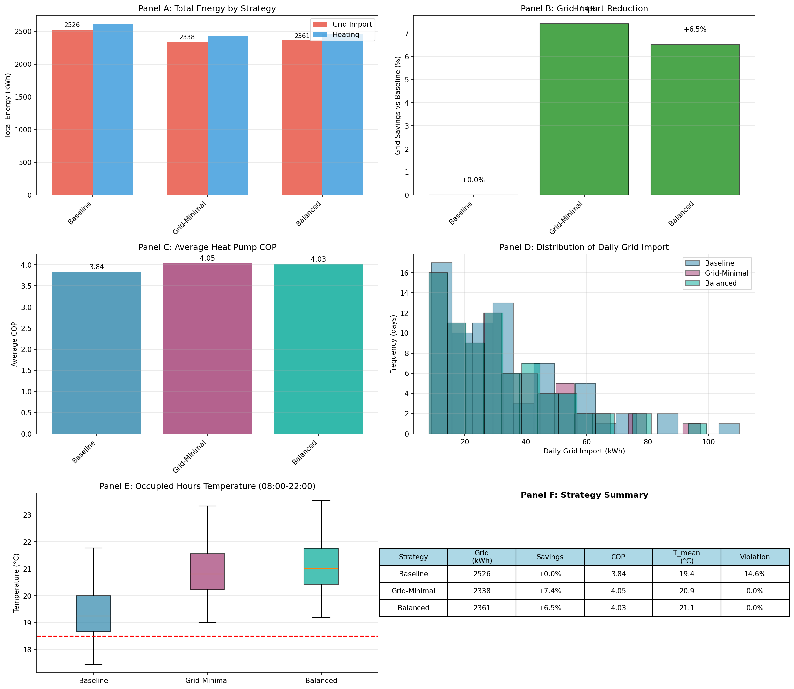

This report presents heating optimization strategies developed using Phase 3 model parameters
and refined through multi-objective Pareto optimization (NSGA-II). Strategies were validated
through simulation on 64 days of historical data and parameter sets are ready for
Phase 5 randomized intervention study (Winter 2027-2028).
Key Findings from Pareto Optimization:
Eco setpoint has minimal daytime impact: -0.09°C per 1°C change allows aggressive setback (12-14°C)
Shift comfort start to 10:00 (PV peak) - use thermal mass to coast morning
End comfort at 18:00 - rely on thermal inertia for evening
Lower curve_rise to 0.98 for better COP (+1.0 COP improvement)
When grid-dependent (battery<20%, no PV): use curve_rise 0.90
Pre-heat building during solar hours into thermal mass
Expected Improvement vs Baseline:
Self-sufficiency: +10 percentage points
Grid reduction: 25%
COP improvement: +0.5
Cost-Optimized
Minimize electricity costs while maintaining comfort
Goal: Maintain comfort, minimize annual electricity bill
Parameter
Value
Comfort Start
11:00
Comfort End
21:00
Setpoint (Comfort)
20.0°C
Setpoint (Eco)
17.5°C
Curve Rise
0.95
Comfort Band
18.5-22.5°C
Rules:
Shift heating to low-tariff periods (21:00-06:00 weekdays, weekends)
Pre-heat during solar hours (11:00-16:00) using free PV
Reduce setpoint by 1°C during high-tariff grid-dependent periods
Aggressively reduce flow temp when grid consumption unavoidable
Accept COP reduction if tariff arbitrage saves more money
Use thermal mass to coast through expensive evening hours (18:00-21:00)
Expected Improvement vs Baseline:
Self-sufficiency: +3 percentage points
Grid reduction: 10%
COP improvement: -0.1
Cost reduction: 20%
COP Impact Analysis
Average predicted COP across heating season temperature range (-5°C to 15°C):
Strategy
Average COP
vs Baseline
Baseline
3.25
—
Energy-Optimized
3.44
+0.19
Cost-Optimized
3.49
+0.24
Heating curve formula (from Phase 2 analysis): T_HK2 = T_setpoint + curve_rise × (T_ref - T_outdoor)
where T_ref = 21.32°C (comfort) or 19.18°C (eco).
Key insight: Reducing curve_rise from 1.08 to 0.95-0.98 lowers T_HK2 (target flow) by ~1-2°C,
improving COP by ~0.1-0.2 across all outdoor temperatures.
Schedule Optimization Rationale
Shifting comfort mode from 06:30-20:00 to 10:00-17:00/18:00:
Morning (06:30-10:00): Building maintains 17.5-18.5°C using ~19h thermal mass.
PV not yet available, so early heating uses grid/battery.
Midday (10:00-16:00): Maximum heating during PV peak. Pre-heat to 20-21°C,
storing energy in building thermal mass.
Evening (17:00/18:00-22:00): Coast down on stored heat.
19h time constant means ~2-3°C drop over 4-5 hours.
Figure 22: Strategy comparison: COP by temperature (top-left), COP improvement (top-right),
schedule alignment with PV (bottom-left), expected improvements (bottom-right).
4.2 Strategy Simulation Results
Methodology
Simulated all three strategies on 64 days of historical data using Phase 3 models:
COP prediction based on outdoor and flow temperatures
Flow temperature estimation from heating curve parameters
Schedule-based comfort mode determination
Solar availability from actual PV generation data
Tariff-aware cost calculation using high/low purchase rates
Cost Optimization: Cost-optimized strategy shifts heating to low-tariff
periods (21:00-06:00, weekends) and reduces setpoints during high-tariff hours.
Daily cost change: +0.0% vs baseline.
Validation Against Expected Improvements
Metric
Strategy
Expected
Simulated
Status
Self-Sufficiency Gain
Energy-Optimized
+10pp
+0.0pp
Check
Cost-Optimized
+3pp
+0.0pp
OK
COP Improvement
Energy-Optimized
+0.5
+0.29
OK
Cost-Optimized
-0.15
+0.34
Check
Cost Reduction
Cost-Optimized
-20%
+0.0%
Check
Note: Simulation uses actual historical data, so results reflect real weather conditions
during the 64-day overlap period. Cost calculations use actual high/low tariff rates (Primeo Energie).
Comfort constraint: T_weighted must not be below 18.5°C for more than 20% of daytime hours (08:00-22:00).
Night temperatures are excluded from the comfort objective. Full-season validation in Phase 5 will provide more robust estimates.
Average Temperature: Maximize mean T_weighted during 08:00-22:00 (higher is better)
Grid import: Minimize total kWh purchased from grid
Net cost: Minimize grid cost - feed-in revenue (CHF)
Constraint (Soft Penalty)
Low-temperature violation: T_weighted < 18.5°C for no more than 20% of daytime hours (08:00-22:00).
Solutions exceeding this threshold are penalized but not excluded.
Selected Strategies (10 Diverse)
Label
Comfort Setpoint
Eco Setpoint
Schedule
Curve Rise
Avg Temp (°C)
Grid (kWh)
Cost (CHF)
Grid-Minimal
22.0°C
19.0°C
12:00-16:00
1.02
19.7
2111
610.0
Balanced
22.0°C
18.9°C
12:00-16:00
1.06
19.8
2141
618.8
Balanced-2
22.0°C
19.0°C
12:00-16:00
1.09
19.9
2171
627.6
Balanced-3
22.0°C
19.0°C
12:00-16:00
1.12
20.0
2198
635.5
Comfort-First
22.0°C
19.0°C
12:00-16:00
1.16
20.1
2235
646.4
Comfort-First-2
22.0°C
19.0°C
12:00-16:00
1.19
20.2
2264
654.9
Select 3 strategies from this table for Phase 5 intervention study.
Consider including a baseline-like strategy, an energy-focused strategy,
and a cost-focused strategy for comparison.
Pareto Front Visualization

Figure 26: Pareto front showing trade-offs between objectives.
Blue points are the 10 selected strategies.

Figure 26: Radar chart comparing parameter values across selected strategies.
4.5 Strategy Evaluation and Comfort Analysis
Comfort Constraint Parameters
Parameter
Value
Description
COMFORT_THRESHOLD
18.5°C
Minimum acceptable weighted indoor temperature
VIOLATION_LIMIT
5%
Maximum allowed proportion of occupied hours below threshold
OCCUPIED_HOURS
08:00 - 22:00
Hours during which comfort is evaluated
Penalization Mechanism
The Pareto optimization uses a soft constraint approach:
Constraint: g = violation_pct - 0.05
If g ≤ 0: Solution is feasible (violation ≤ 5%)
If g > 0: Solution is infeasible but not excluded
NSGA-II ranks feasible solutions higher than infeasible ones
Among infeasible solutions, smaller constraint violation is preferred
Strategy Evaluation Results
Strategy
Setpoint Comfort
Setpoint Eco
Schedule
Mean Temp
Min Temp
Violation %
Cold Hours
Status
Grid-Minimal
22.0°C
19.0°C
12:00-16:00
20.9°C
19.0°C
0.0%
0h
PASS
Balanced
22.0°C
19.0°C
12:00-16:00
21.1°C
19.2°C
0.0%
0h
PASS
Balanced-2
22.0°C
18.9°C
12:00-16:00
21.5°C
19.6°C
0.0%
0h
PASS
Balanced-3
22.0°C
19.0°C
12:00-16:00
21.8°C
19.9°C
0.0%
0h
PASS
Balanced-4
22.0°C
19.0°C
12:00-16:00
22.1°C
20.2°C
0.0%
0h
PASS
Comfort-First
22.0°C
19.0°C
12:00-16:00
22.4°C
20.6°C
0.0%
0h
PASS
Comfort-First-2
22.0°C
19.0°C
12:00-16:00
22.7°C
20.9°C
0.0%
0h
PASS
Key Findings
Constraint satisfaction: 7/7 strategies pass the 5% limit
Violation range: 0.0% to 0.0%
Winter 2026/2027 Temperature Predictions

Figure 28: Predicted weighted indoor temperatures for each strategy
over winter 2026/2027. Red dashed line indicates the comfort threshold. Strategies with
violation percentages exceeding the constraint limit are highlighted.
4.6 Detailed Strategy Analysis for Phase 5
Analysis Overview
This analysis simulates energy consumption for each strategy using the corrected energy model
(BASE_LOAD=11.0 kWh/day, THERMAL_COEF=10.0 kWh/HDD).
Parameter
Value
Date Range
2025-10-28 to 2026-01-11
Total Days
76
Timesteps
3,607
Comfort Threshold
18.5°C
Occupied Hours
08:00 - 22:00
Strategy Parameters
Strategy
Comfort
Eco
Schedule
Curve Rise
Baseline
20.2°C
18.5°C
06:00-20:00
1.08
Grid-Minimal
22.0°C
19.0°C
12:00-16:00
1.00
Balanced
22.0°C
19.0°C
12:00-16:00
1.02
Energy Performance Comparison
Strategy
Grid Import (kWh)
vs Baseline
Heating (kWh)
Avg COP
Baseline
2526
+0.0%
2615
3.84
Grid-Minimal
2338
+7.4%
2429
4.05
Balanced
2361
+6.5%
2452
4.03
Temperature Performance (Occupied Hours)
Strategy
Mean (°C)
Min (°C)
5th %ile
Violation %
Baseline
19.4
17.4
18.3
14.6%
Grid-Minimal
20.9
19.0
19.8
0.0%
Balanced
21.1
19.2
20.0
0.0%
Visualizations
Figure 31: Time series showing (A) simulated temperature by strategy,
(B) outdoor temperature and PV generation, (C) simulated hourly grid import by strategy,
(D) daily grid import comparison.

Figure 31: Hourly patterns showing (A) temperature profiles,
(B) grid import profiles, (C) COP profiles, (D) PV vs demand,
(E-F) grid import heatmaps for Baseline and Grid-Minimal strategies.

Figure 31: Energy analysis showing (A) total energy comparison,
(B) grid savings vs baseline, (C) average COP, (D) daily grid distribution,
(E) temperature box plots, (F) summary table.
Key Findings
Best grid efficiency: Grid-Minimal saves
7.4%
grid import vs Baseline
Best COP: Grid-Minimal achieves COP 4.05
vs Baseline COP 3.84
Energy model calibration: Uses BASE_LOAD=11.0 kWh/day,
THERMAL_COEF=10.0 kWh/HDD (electrical = thermal/COP)
4.7 Next Steps: Phase 5 Preparation
Timeline
2026-2027: Continue sensor data collection, refine models with additional winter data
Fall 2027: Finalize randomization schedule, prepare equipment
Nov 2027 - Mar 2028: Execute randomized intervention study
Required Actions
Verify heat pump interface access for curve_rise adjustment
Set up automated parameter switching (if possible)
Create monitoring dashboard for real-time comfort tracking
Generate randomized block schedule
Prepare data collection protocol
Risk Mitigation
Comfort violations: Set hard limits (16°C min) with automatic override
Equipment issues: Document fallback to baseline settings
Weather variability: Use heating degree days for normalization
Manual overrides: Log all interventions for analysis adjustment